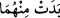
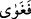

giydirmiş olduğu nurdan elbise soyuldu. Böylelikle avret yerleri açıkta kaldı.”
Onların elbiselerinin tırnaktan olduğu da söylenmiştir. O hatâyı işleyince üzerlerinden
soyulup gitti. Sadece parmaklarının ucunda kaldı. Onların elbiselerinin cennet
elbisesi/hulle olduğu da söylenmiştir.
Übey b. Ka‘b (r.a.)’ın şöyle dediği rivâyet edilmiştir: “Rasûlullah (s.a.) şöyle
buyurdu: “Babanız Âdem uzun bir hurma ağacı kadar uzun boylu ve uzun saçlı (kıllı)
idi. Avret yeri örtülü idi. Hatâ işlediği vakit avret yeri açıldı. (Bundan utanarak)
cennette koşmaya başladı. Alnı cennette bir ağaca çarptı ve oracıkta oturup kaldı.
Rabb’i ona şöyle nidâ etti: “Ey Âdem, benden mi kaçıyorsun?” Âdem: “Hayır ya
Rabbi, senden utandığımdan kaçıyorum.” dedi.”[110]
Hasîrî şöyle demiştir: “Yaptıkları hatânın karşılığı olarak avret yerleri başkalarına
değil sadece onlara göründü. Başkalarının suçun karşılığı olarak, onların bildiklerini
bilmemeleri için böyle yapıldı. Şayet avret yerleri başkalarına da açılsaydı o zaman “ buyurulurdu.”
“Üstlerini cennet yaprağı ile örtmeye çalıştılar.” Yani, yaprakları üst üste getirerek
avret mahallerini örtmeye çalıştılar. Avret yerleri kapansın diye yaprakları açılan
yerlerine dizdiler. Yapraklar, incir ağacının yapraklarıydı. Yapraklar yuvarlak olduğu,
parmaklarının altında bu şekli aldığı söylenmiştir.
Bu sûretle o ağaçtan yiyerek “Âdem, Rabb’ine âsî olup yolunu şaşırdı.” İsyan, tâatten
çıkmak demektir.
“ matlûbu olan ebedîlikten veya “Bu ağaca yaklaşmayın” (el-Bakara, 2/35)
emri ile ağaçtan uzak durmak emrinden ya da düşmanın sözüne aldanarak rüşdden/doğru
yoldan ayrıldı. Çünkü rüşd “ğayy/yoldan çıkma”, rüşd’ün tersidir.
Bil ki günah, kasden yapılan haram fiildir. Zelle ise kendisinden sâdır olan kimse için
günah değildir. Çünkü zelle, mübâh bir fiili yapmayı kasdederken meydana gelen, onu
yapan kimsenin bizzat yapmayı kasdetmediği haram bir fiilin adıdır. Bu âyette zelleye,
ma’siyet denilmesi, mecazdır. Çünkü bütün peygamberler bize/ehl-i sünnete göre büyük
ve küçük günahlardan mâsûmdurlar, ancak zellelerden değil. Eş’arîler’den bâzılarına
göre ise peygamberler küçük günahlardan mâsûm değildir. Peygamberlerin ismeti
mevzûunda denilir ki: Onların zellesi, haktan bâtıla meyletmek anlamına gelmez. Belki
bu, efdal/daha fazîletli olandan fazîletli olana yönelmek anlamındadır. Onlar Allah
katındaki değerlerinin ve yerlerinin yüksek oluşu sebebiyle zelleden dolayı bile
kınanırlar.
Şeyhzâde, Hâşiyesinde şöyle der: “İsyan, emredileni terk etmek ve yasaklananı
yapmaktır. Eğer bu, kasden yapılırsa günah (zenb), hatâ ile yapılırsa “zelle” diye
isimlendirilir. Bu âyet, Âdem (a.s.)’dan ma’sıyet sâdır olduğuna delâlet etmektedir.
Musannif de onu “zelle” diye isimlendirmiştir ve şöyle demiştir: “Hz. Âdem’in
zellesinin küçüklüğüne rağmen onun “isyan ve yolunu şaşırma (gavâye)” diye anılması,
zelleyi büyütmek/önemsemek ve çocuklarını bu türlü hatâlara düşmekten sakındırmak
içindir.” Hz. Âdem yasak ağaçtan yememeyi ictihadda bulunarak terk etmiştir, yoksa